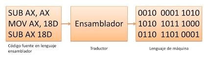

Generador de Código Objeto
Diaz Garduño Alan Fernando
No. Control: 18210990
índice
- Introdução...................................................3
- Abstrato.....................................................4
- Objetivo específico..........................................5
- 4.1 Cadastro.................................................7
- 4.2 linguagem de montagem....................................9
- 4.3 Linguagem de máquina....................................13
- 4.4 Gerenciamento de memória................................17
Introdução
Neste tópico estaremos falando sobre a geração do código objeto que será referenciado a criação do código, que será baseado em um registrador que é mais as palavras reservadas que seu compilador possui, o montador se encarrega de converter de um fonte de linguagem para uma máquina, a linguagem de máquina que é mais a interpretação que a máquina tem e o gerenciamento de memória que é mais como a memória seria distribuída para todo o software.
Abstrato
É assim que será gerado um novo idioma que terá palavras reservadas, um intérprete que se encarrega de traduzi-lo para o idioma que o computador entende e a distribuição de memória que a linguagem de programação possui..
Objetivo específico
- a criação de uma nova linguagem de programação.
- os processos que serão direcionados.
- quão fácil é a sua compreensão.
- quão fácil é a sua maneira de gerar código.
O que é?
Transforma o código otimizado intermediário em código de objeto de baixo nível. Ele pega o código intermediário e gera o código objeto para a máquina considerada, é a parte mais próxima da arquitetura da máquina. Normalmente, o desenvolvimento customizado é escrito ``à mão'' para cada máquina específica.
Cadastro

O que é?
Os registradores são a memória principal do computador. Existem diversos registradores de uso geral e outros de uso exclusivo. Alguns registradores de propósito geral são usados para certos tipos de funções. Existem registradores de acumuladores, ponteiro de instrução, pilha, etc.
linguagem de montagem
O que é?
É um tipo de linguagem de baixo nível usada para escrever programas de computador e é a representação mais direta do código de máquina específico para cada arquitetura de computador.

Caracteristicas
O programa lê um arquivo escrito em linguagem assembly e substitui cada um dos códigos mnemônicos por seu código de máquina equivalente. Os programas são facilmente transportados de máquina para máquina e a computação de ramificação é facilitada.
Classificação
- Montadores básicos: São de nível muito baixo, e sua tarefa consiste basicamente em oferecer nomes simbólicos para as diferentes instruções, parâmetros e coisas como modos de endereçamento.
- Montadores modulares, ou macroassemblers: Descendentes dos montadores básicos, foram muito populares nas décadas de 1950 e 1960, antes da generalização das linguagens de alto nível. Uma instrução de macro é o equivalente a uma função em uma linguagem de alto nível.
Linguagem de máquina
O que é?
A linguagem de máquina só é compreensível por computadores. Baseia-se em uma lógica binária de 0 e 1, geralmente implementada por mecanismos elétricos. Em geral, a linguagem de máquina é de difícil compreensão para o ser humano, por isso utilizamos linguagens mais parecidas com as linguagens naturais.
Exemplo

Vantagens e Desvantagens
Vantagem
- Maior adaptação à equipa.
- Velocidade máxima com uso mínimo de memória.
Desvantagens
- Impossibilidade de escrever código independente de máquina.
- Maior dificuldade em programar e compreender programas.
- O programador deve conhecer mais de cem instruções.
- É necessário conhecer detalhadamente a arquitetura da máquina.
Gerenciamento de memória

O que é?
Consiste em determinar a posição da memória na qual os diferentes símbolos do programa armazenam a informação
Depende da estratégia utilizada para gerenciamento de memória, o mecanismo pode variar.
O gerenciamento de memória é um processo muito importante atualmente, de forma que seu mau uso tem ação direta no desempenho da memória.
Característica
- Compartimento: O gerenciamento de memória é um processo muito importante nos dias de hoje, de forma que seu bom ou mau uso tem ação direta no desempenho da memória.
- Realocação: A técnica de multiprogramação exige que vários programas ocupem a memória ao mesmo tempo.
- Organização Física: Devido ao custo da memória principal rápida, ela é usada em conjunto com uma memória secundária muito mais lenta para estender sua capacidade.
- Organização Lógica: Embora a maioria das memórias seja organizada linearmente com endereçamento sequencial, isso dificilmente condiz com o caminho seguido pelo programa, devido ao uso de procedimentos, funções, sub-rotinas, arrays, etc.
Exemplo